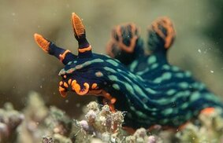
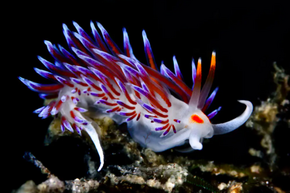
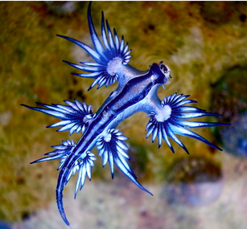

The electric dragon a.k.a. Dorid nudibranch. Special power: Uses toxins made by their prey and release them as a defensive mucus.

The fire dragon a.k.a. Cratena peregrina. Special power: It targets prey after the prey has hunted, consuming both the prey and its recent meal. This is also known as "kleptopredation."

The blue dragon a.k.a. Glaucus atlanticus. Special power: Stores stinging nematocysts from the siphonophores within its own tissues as defence against predators.